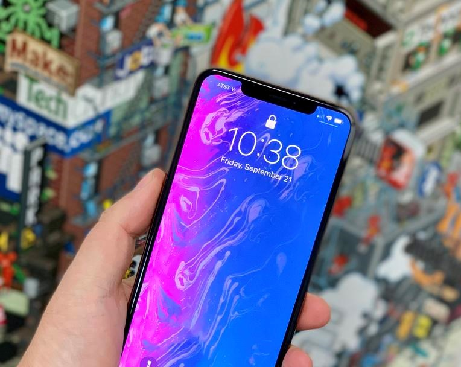
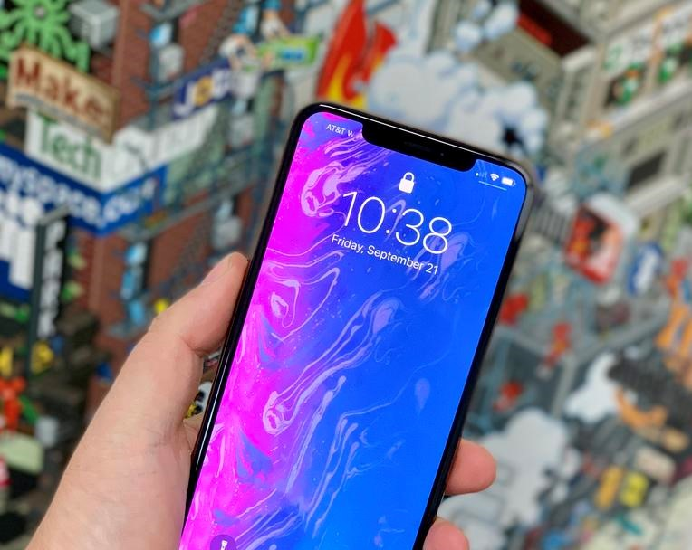

Bigger and bolder than anything Apple has ever put in a phone, the iPhone XS Max's OLED display is a sight to behold. Not only is it ginormous at 6.5 inches, you can use split-view mode in various Apple apps, such as Mail and Calendar. The phone looks and feels more like a desktop. However, the Galaxy Note 9 can run two separate apps side by side, including third-party apps.
The A12 Bionic processor is the first 7-nanometer chip in a phone, but what's more important is what that enables. Apple claims that the two high-performance cores in this 6-core processor are up to 15 percent faster, and that the 4-core GPU is up to 50 percent faster.
If there's one area where the Apple needed to improve the iPhone, it's the camera. Google's Pixel 2 beat the iPhone X in our face-off, especially in low light. The iPhone XS and XS Max even the score with dual 12-MP cameras that have bigger and deeper pixels that let in up to 50 percent more light without sacrificing sharpness.
The audio boost in the iPhone XS and iPhone XS Max is so good that you'll think twice about connecting to a Bluetooth speaker. Apple says it widened the stereo sound to deliver more detail, and I immediately appreciated the difference when I put the iPhone X and the iPhone XS side by side.
The iPhone XS Max the phone to get if you want longer endurance. On the Tom's Guide Battery Test, which involves continuous web surfing over LTE on 150 nits of screen brightness, the iPhone XS Max lasted a good 10 hours and 38 minutes. That's above the category average but below the Galaxy Note 9's time of 11:16. The Pixel 2 XL lasted an even longer 12:09.
The iPhone XS and XS Max now support Gigabit-class LTE, thanks to a new enclosure that has additional antennas that enable what's called 4x4 MIMO. The result was blazing speeds on T-Mobile's network using the Speedtest.net app. Downloads reached as high as 103 Mbps on the iPhone XS and 96.9 Mbps on the iPhone XS Max. The iPhone XS Max averaged 58.2 down, and the iPhone XS averaged a faster 67.2 Mbps. Uploads on the iPhone XS averaged 18.6 Mbps; the iPhone XS Max pulled ahead here with 25.4 Mbps. By comparison, the older iPhone X averaged just 15.5 Mbps down and under 6 Mbps uploads. Third-party testing by SpeedSmart.net found similar LTE results, with the iPhone XS offering nearly double the download rates on some networks. In side-by-side tests against the Galaxy Note 9, the iPhone XS Max delivered slower download speeds but slightly faster uploads. We ran Speedtest.net multiple times in three different locations in New York City, and the iPhone averaged 45 Mbps downloads and 21.8 Mbps uploads, compared to 53.8 Mbps down and 18.6 Mbps up for the Galaxy.
| Specifications | ||
|---|---|---|
| NETWORK | Technology | GSM / CDMA / HSPA / EVDO / LTE |
| LAUNCH | Announced | 2019, Febuary |
| Status | Available now in market | |
| BODY | Dimensions | 157.5 x 77.4 x 7.7 mm |
| Weight | 208 g | |
| Build | Scratch-resistant glass, oleophobic coating | |
| Scratch-resistant glass | ||
| SIM | Single Dual Sim, Dual Standby, Single SIM (Nano-SIM) | |
| iphone pay | ||
| IP68 dust/water proof (up to 1.5m for 30 mins) | ||
| DISPLAY | Type | Super AMOLED capacitive touchscreen, 16M colors, Multitouch |
| Size | 6.5 inches | |
| Resolution | 1242 x 2688 Pixels (~456 PPI) | |
| Protection | oleophobic coating | |
| HDR10+ | ||
| Always on display | ||
| PLATFORM | OS | ios 12 |
| Chipset | A12 chipset bionic | |
| Qualcom | ||
| CPU | hexa core | |
| hexa-core | ||
| GPU | Apple GPU (4-core graphics) | |
| Adreno 640 - USA/LATAM, China | ||
| MEMORY | Card no | 64/256/512GB Built-in, 4GB RAM |
| Internal | 64/256/512GB Built-in | |
| MAIN CAMERA |
dual | 12 MP,( f/1.8, 28mm, OIS, PDAF) |
| 12 MP, (f/2.4, 52mm, OIS, PDAF, 2x optical zoom), quad-LED (dual tone) flash | ||
| front 7 MP, f/2.2, 32mm, HDR, Video (1080p@60fps) | ||
| Features | Geo-tagging, touch focus, face/smile detection, HDR (photo/panorama) | |
| Video | 2160p@60fps, 1080p@240fps, 720p@960fps, HDR, dual-video rec. | |
| SELFIE CAMERA |
single | 7 MP, f/2.2, 32mm, HDR, Video (1080p@60fps) |
| 7 MP, f/2.2, 32mm, HDR, Video (1080p@60fps) | ||
| Features | Video (2160p@24/30/60fps, 1080p@30/60/120/240fps, HDR, stereo sound rec.) | |
| audio | MP3/WAV/AAX+/AIFF/Apple Lossless player | |
| SOUND | Loudspeaker | MP4/H.264 player, Speaker Phone |
| 3.5mm jack | no | |
| 32-bit/384kHz audio | ||
| Active noise cancellation with dedicated mic | ||
| Dolby Atmos/AKG sound | ||
| COMMS | WLAN | WMP4/H.264 player, Speaker Phone |
| Bluetooth | 5.0, A2DP, LE, | |
| GPS | Yes, + A-GPS support & Glonass, BDS, GALILEO, QZSS | |
| NFC | YES | |
| RADIO | no | |
| USB | 2.0, proprietary reversible connector | |
| FEATURES | Sensors | Face ID, Accelerometer, Barometer, Compass, Gyro, Proximity |
| browser | ||
| Front/back glass + stainless steel frame, | ||
| Siri natural language commands and dictation | ||
| BATTERY | Non-removable li-on | |
| Charging | Fast battery charging: 50% in 30 min, Qi wireless charging | |
| Fast wireless charging 15W | ||
| Power bank/Reverse not a wireless charging 9W | ||
| MISC | Colors | Space Gray, Silver, Gold |
| data | GPRS, Edge, 3G (HSPA 42.2/5.76 Mbps), 4G (LTE-A (4CA) Cat16 1024/150 Mbps, EV-DO Rev.A 3.1 Mbps) | |
| browser | html5 (safari) | |
| SAR EU | 0.52 W/kg (head) 1.58 W/kg (body) | |
| PRICE | RS 167,999 | |
| TESTS | Performance | Basemark ios II |
| Basemark Xs | ||
| Display | Dolby Vision/HDR10 compliant, Wide color gamut display, 3D Touch display, True-tone display, 120 Hz touch-sensing | |
| massaging | iMessage, SMS(threaded view), MMS, Email, Push Email | |
| Audio quality | Noise -93.0dB / Crosstalk -94.3dB | |
| Battery | Endurance Fast battery charging: 50% in 30 min | |